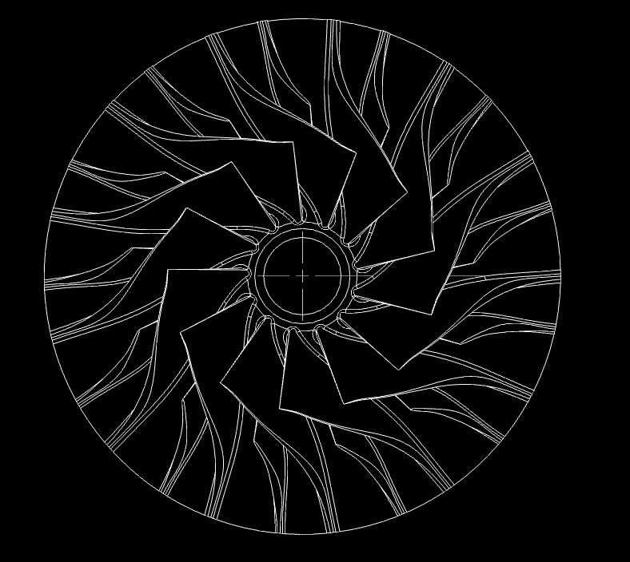
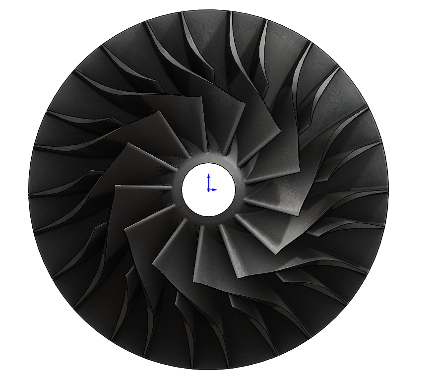

Частота вращения
Фактическая частота и время работы на каждой ступени разгона.
Завершённый контур верификации включает CFD, прочностной и модальный анализ, контроль геометрии, балансировку и стендовую проверку до 3 000 мин⁻¹. Расчётная точка проекта — 12 000 мин⁻¹.
Статусы не смешивают подготовленные материалы с ещё не полученными результатами.
Стендовые испытания выполнены до 3 000 мин⁻¹. Расчётная валидация на 12 000 мин⁻¹ подтверждена методом CFD.
Набор измерений предназначен для сравнения вариантов Э/Д и контроля безопасного состояния образца.
Фактическая частота и время работы на каждой ступени разгона.
Прирост полного давления и объёмный либо массовый расход по принятой схеме измерения.
Контроль изменения вибрации, температуры узла и внешнего состояния детали.
Значения приведены по ПЗ редакции 06 для расчётной точки 12 000 мин⁻¹ и отделены от приёмочных стендовых характеристик.

ANSYS CFD
ANSYS CFDАрхив содержит постановки РК‑200‑Э, РК‑200‑Д для 3 000 и 12 000 мин⁻¹. Отдельный расчёт прочности 0018 устанавливает подтверждённую область стендового применения и ограничения проектной точки.
Каждый этап проверки связан с актуальным документом комплекта EMTH.
Целостность тела, диаметр, каналы и интерфейс втулки.
Аэродинамические показатели и разделение статусов данных.
Сушка, печать, отжиг, армирование, втулка и балансировка.
Пошаговый разгон, измерения, безопасность и протоколирование.
Полный анализ влияния отказов проведён для всех компонентов. Максимальный RPN — ниже порога.
| Компонент | Отказ | Влияние | S | O | D | RPN |
|---|---|---|---|---|---|---|
| Корпус PA12-CF10 | Трещина при вибрации | Потеря герметичности | 7 | 3 | 4 | 84 |
| Втулка Ø30/Ø22 | Люфт в посадке | Дисбаланс ротора | 8 | 2 | 5 | 80 |
| Лопатки (основные) | Откол кромки | Снижение КПД | 6 | 3 | 4 | 72 |
| Лопатки (сплиттеры) | Расслоение М2 | Снижение жёсткости | 5 | 2 | 5 | 50 |
| Ключ 6×6 мм | Срез ключа | Потеря передачи | 9 | 1 | 3 | 27 |
| Эпоксидный клей | Отслоение втулки | Дисбаланс | 7 | 2 | 4 | 56 |
Полный отчёт FMEA (20 режимов) доступен в документации: EMTH.19.01.02.59.00.000.0008 Д
Видеоэкспорт результатов ANSYS Mechanical для стендового и расчётного режимов. Открывается в новой вкладке для воспроизведения.